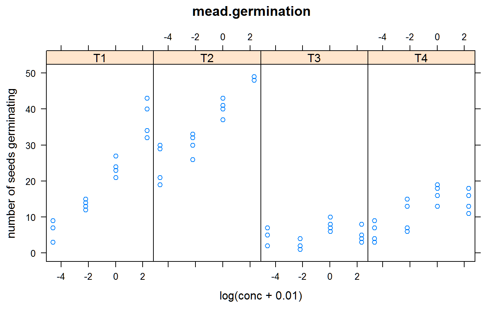

mead.germination.RdSeed germination with different temperatures/concentrations
A data frame with 64 observations on the following 5 variables.
temptemperature regimen
repreplication factor (not blocking)
concchemical concentration
germnumber of seeds germinating
seedsnumber of seeds tested = 50
The rep factor is NOT a blocking factor.
Roger Mead, Robert N Curnow, Anne M Hasted. 2002. Statistical Methods in Agriculture and Experimental Biology, 3rd ed. Chapman and Hall. Page 350-351.
Used with permission of Roger Mead, Robert Curnow, and Anne Hasted.
Schabenberger, O. and Pierce, F.J., 2002. Contemporary statistical models for the plant and soil sciences, CRC.
library(agridat) data(mead.germination) dat <- mead.germination dat <- transform(dat, concf=factor(conc)) libs(lattice) xyplot(germ~log(conc+.01)|temp, dat, layout=c(4,1), main="mead.germination", ylab="number of seeds germinating")m1 <- glm(cbind(germ, seeds-germ) ~ 1, dat, family=binomial) m2 <- glm(cbind(germ, seeds-germ) ~ temp, dat, family=binomial) m3 <- glm(cbind(germ, seeds-germ) ~ concf, dat, family=binomial) m4 <- glm(cbind(germ, seeds-germ) ~ temp + concf, dat, family=binomial) m5 <- glm(cbind(germ, seeds-germ) ~ temp * concf, dat, family=binomial) anova(m1,m2,m3,m4,m5)#> Analysis of Deviance Table #> #> Model 1: cbind(germ, seeds - germ) ~ 1 #> Model 2: cbind(germ, seeds - germ) ~ temp #> Model 3: cbind(germ, seeds - germ) ~ concf #> Model 4: cbind(germ, seeds - germ) ~ temp + concf #> Model 5: cbind(germ, seeds - germ) ~ temp * concf #> Resid. Df Resid. Dev Df Deviance #> 1 63 1193.80 #> 2 60 430.11 3 763.69 #> 3 60 980.10 0 -549.98 #> 4 57 148.11 3 831.99 #> 5 48 55.64 9 92.46## Resid. Df Resid. Dev Df Deviance ## 1 63 1193.80 ## 2 60 430.11 3 763.69 ## 3 60 980.10 0 -549.98 ## 4 57 148.11 3 831.99 ## 5 48 55.64 9 92.46 # Show logit and fitted values. T2 has highest germination subset(cbind(dat, predict(m5), fitted(m5)), rep=="R1")#> temp rep conc germ seeds concf predict(m5) fitted(m5) #> 1 T1 R1 0.0 9 50 0 -1.81528997 0.140 #> 2 T1 R1 0.1 13 50 0.1 -0.99462258 0.270 #> 3 T1 R1 1.0 21 50 1 -0.10008346 0.475 #> 4 T1 R1 10.0 40 50 10 1.07212067 0.745 #> 5 T2 R1 0.0 19 50 0 -0.02000067 0.495 #> 6 T2 R1 0.1 33 50 0.1 0.42634269 0.605 #> 7 T2 R1 1.0 43 50 1 1.41784272 0.805 #> 8 T2 R1 10.0 48 50 10 3.31678004 0.965 #> 9 T3 R1 0.0 7 50 0 -2.14286337 0.105 #> 10 T3 R1 0.1 1 50 0.1 -2.84385174 0.055 #> 11 T3 R1 1.0 8 50 1 -1.69591151 0.155 #> 12 T3 R1 10.0 3 50 10 -2.19722458 0.100 #> 13 T4 R1 0.0 4 50 0 -2.04065552 0.115 #> 14 T4 R1 0.1 13 50 0.1 -1.35533214 0.205 #> 15 T4 R1 1.0 16 50 1 -0.70818506 0.330 #> 16 T4 R1 10.0 13 50 10 -0.89538405 0.290